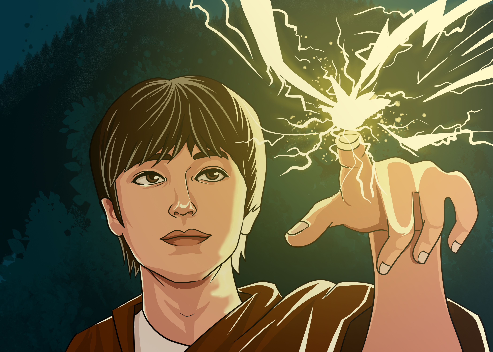

This is KimBum, Inspired by Attack on Titan.

This art I made during the release of Attack on Titan season 4 part 1. The anime was very hyped during that and the trailer is so amazing, I was amazed when war hammer titan transformed and
I thought maybe I could make a digital artwork with that kind of thunderbolt effect.
So I decided to make a artwork of kim bum and put thunder bolt on his fingers inspired by AoT.
I'm just so bored that time and yeah my creative spirit is on fire and I can't stop it.
I spend almost 8 hours sitting infront of my computer with my drawing tab, making it perfect while watching youtube tutorials.
Yeah that was 4 years ago, I don't know if I have that photoshop skill til now. But I can relearn it by wathing youtube again.
I just need more practice to relearn the skills.
Follow me on twitter, there's nothing there ^_^.